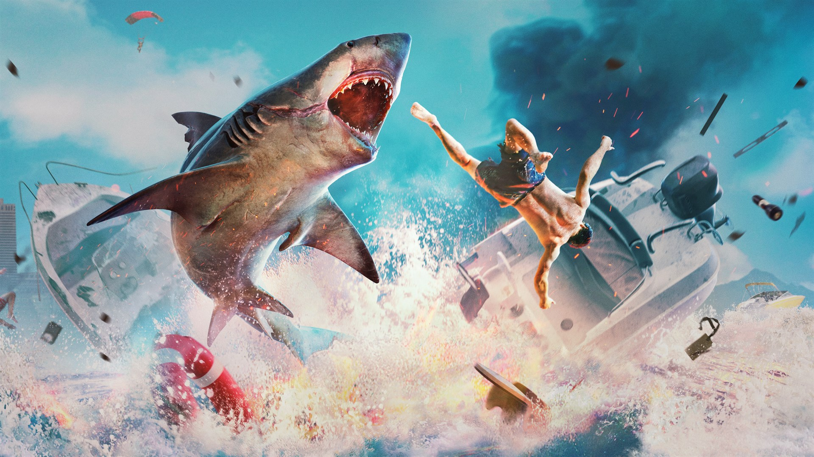
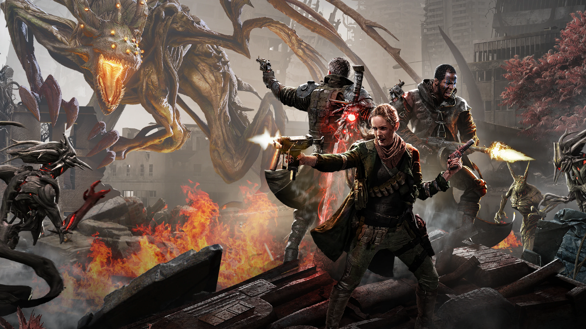
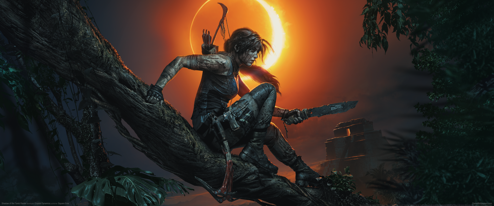
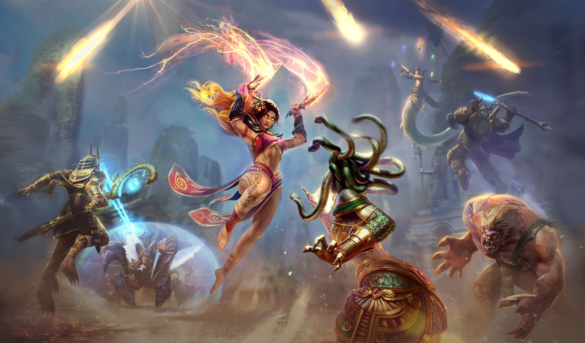
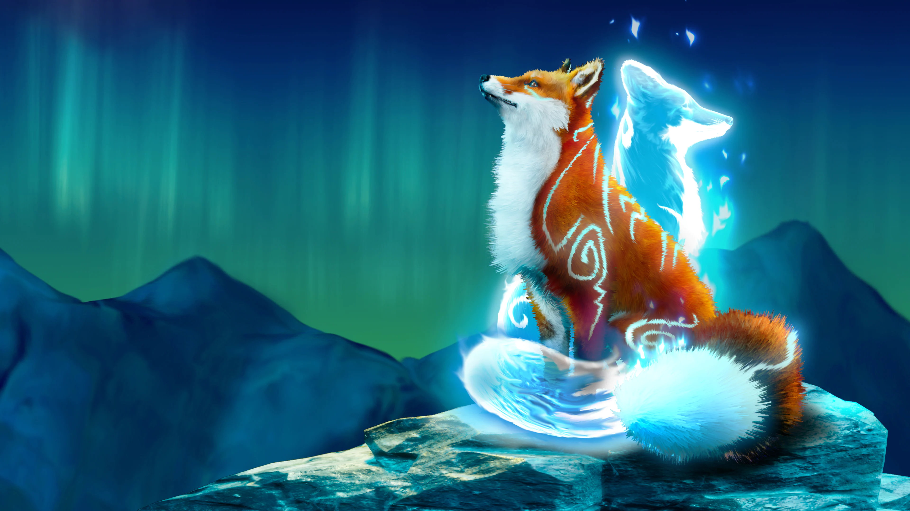
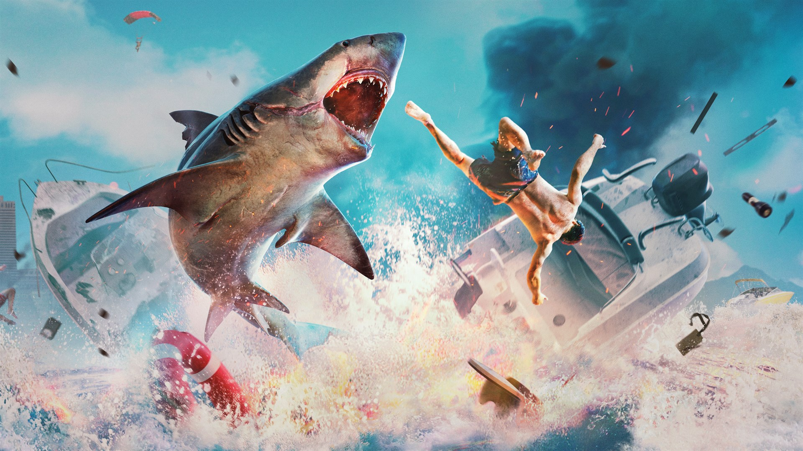
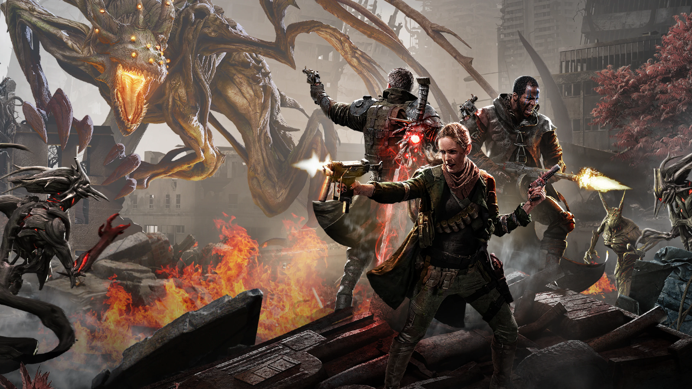
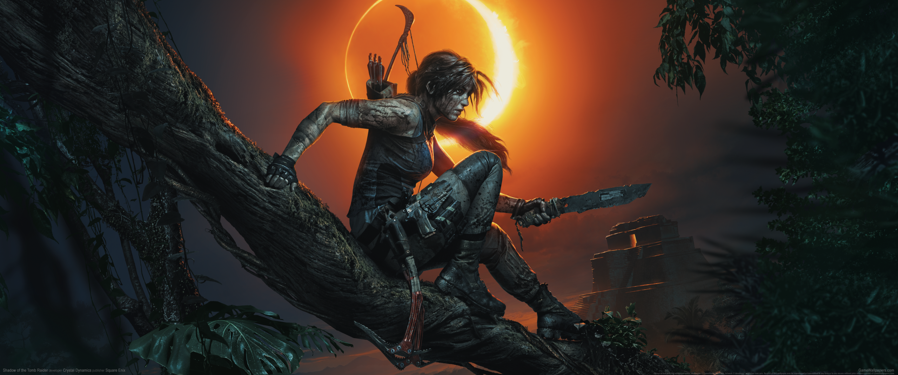
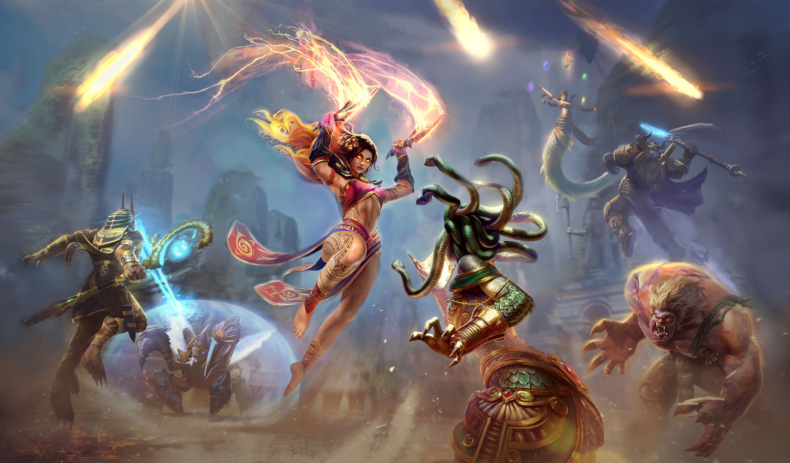
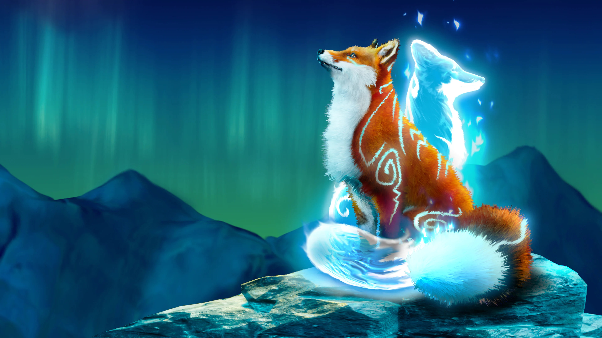

É um jogo de tiro em primeira pessoa, desenvolvido pela DICE e publicado pela Electronic Arts. É o décimo sexto jogo da série Battlefield. Foi lançado mundialmente para Microsoft Windows, PlayStation 4 e Xbox One em 20 de novembro de 2018. O jogo continua a partir de seu precursor Battlefield 1, concentrando-se na Segunda Guerra Mundial.
Don't Starve Together é um jogo de sobrevivência e aventura que adicionou um modo multiplayer online ao jogo indie Don't Starve. Ao se reunir com um grupo de até 6 participantes, é preciso se esforçar para não morrer de fome e explorar os mistérios e perigos de um estranho mundo.
O jogo se passa em uma ilha fictícia do Caribe chamada "Yara", inspirada em Cuba, governada por uma ditadura do "El Presidente" Anton Castillo (dublado e modelado por Giancarlo Esposito), que está criando seu filho Diego (dublado por Anthony Gonzalez), para seguir seu governo. O jogador assume o papel de um guerrilheiro tentando recuperar a ilha para seu povo.
Maneater é um jogo de RPG de ação de mundo aberto no qual um tubarão-touro solitário massacra e devora uma variedade infinita de humanos e animais selvagens. Grandes galões de sangue são derramados enquanto os jogadores exploram a cidade costeira americana de Port Clovis. Junto com o passeio está o narrador de humor negro Trip Westhaven, que fala demais sobre sua ex-esposa Susan, propensão para bebidas tropicais e uma possível incursão no canibalismo.
Remnant: From the Ashes empresta sua mecânica de franquias como a série Dark Souls, mas ao invés de ser simplesmente combate corpo a corpo, incorpora um elemento de tiro em terceira pessoa onde o jogador pode empunhar até duas armas de fogo, uma arma principal e um braço lateral, ao lado de sua arma branca.
É um jogo de ação e aventura jogado de uma perspectiva de terceira pessoa; Os jogadores assumem o papel da protagonista Lara Croft enquanto ela explora ambientes em todo o continente da América do Sul. O centro do jogo está definido para ser o maior da franquia, que também revela a cidade escondida de Paititi.
Os jogadores são formados em duas equipes, com 5 jogadores para cada equipe no modo principal (conquista). As equipes começam em lados opostos do mapa. Neste modo de jogo, existem 3 rotas contínuas que funcionam a partir de um lado do mapa para o outro. Cada rota é defendida por uma "Fênix", que é acompanhada por um par de torres defensivas. Fênix e torres dão uma grande quantidade de dano a todos os inimigos que chegam perto delas. O objetivo de cada jogo é destruir a Fênix da equipe adversária e o Titã, um guerreiro gigante que deve ser derrotado para ganhar o jogo.
Spirit of the North é um jogo de aventura em terceira pessoa para um jogador inspirado nas paisagens deslumbrantes e misteriosas da Islândia. Jogue como uma raposa vermelha comum cuja história se entrelaça com a guardiã da aurora boreal, uma raposa espiritual feminina.